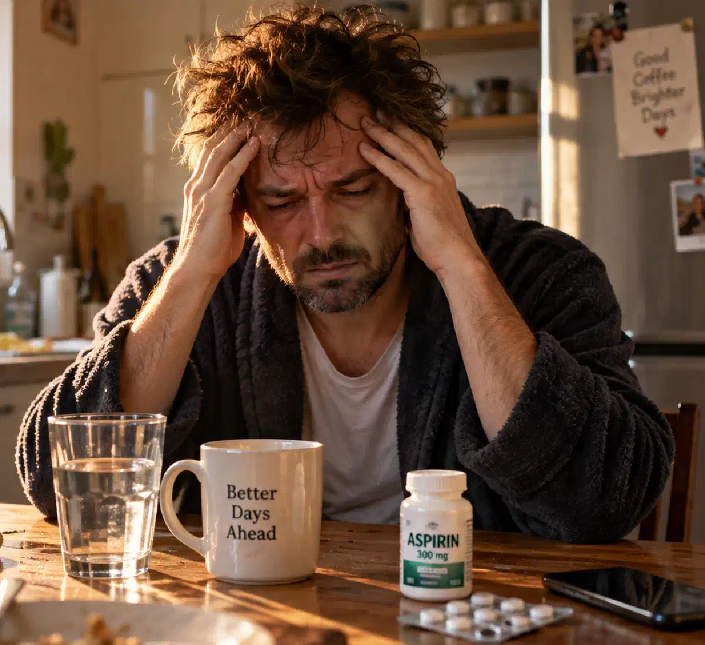

+38(068) 79 72 782
+38(068) 79 72 782Чому після 40 років похмілля триває два дні — причини та особливості організму
Похмілля на другий день - не завжди норма


Безкоштовна консультація, працюємо цілодобово 24/7
Похмілля на другий день - не завжди норма

Дата написання: 14 жовт. 2026 р.
Останнє оновлення: 14 жовт. 2026 р.
Похмілля після 40 років може переноситися значно важче, ніж у молодому віці. Навіть звична кількість алкоголю іноді спричиняє виражений головний біль, нудоту, слабкість, прискорене серцебиття та порушення сну. У деяких людей неприємні симптоми зберігаються не лише наступного ранку, а й протягом 48 годин. Причини дводенного похмілля пов’язані з індивідуальними особливостями перероблення алкоголю, змінами водного балансу, запальними реакціями та супутніми захворюваннями. Важливу роль відіграють стан печінки, якість сну, приймання лікарських препаратів і регулярність вживання спиртного. Водночас тривале нездужання не завжди є звичайним похміллям: іноді воно вказує на алкогольну абстиненцію або інші ускладнення, що потребують медичної допомоги.
Після 40 років людина може помічати, що алкоголь переноситься гірше, а відновлення після застілля займає більше часу. Це пов’язано з поступовими змінами складу тіла, станом внутрішніх органів та особливостями обмінних процесів. З віком у деяких людей зменшуються м’язова маса та загальна кількість води в організмі, тому однакова доза спиртного може створювати вищу концентрацію алкоголю в крові. Додатковий вплив мають хронічні захворювання, недостатній сон, стрес і приймання лікарських препаратів. Водночас не можна стверджувати, що в кожної людини після 40 років обов’язково виникає важке похмілля. Вираженість симптомів залежить насамперед від кількості вжитого алкоголю, індивідуальної чутливості та стану здоров’я. Регулярне погіршення самопочуття після спиртного є приводом переглянути звички та за потреби пройти медичне обстеження.
Тривалість похмільного синдрому визначається не лише кількістю випитого, а й тим, як організм реагує на алкоголь. Зазвичай симптоми стають найвираженішими, коли концентрація етанолу в крові знижується приблизно до нуля. Головний біль, нудота, втома та порушення концентрації уваги можуть зберігатися добу й довше. Якщо людина вживала великі дози спиртного, погано спала або мала повторне блювання, відновлення іноді затягується до другого дня. Водночас дводенне похмілля не означає, що алкоголь продовжує циркулювати в крові всі 48 годин. Навіть після його виведення зберігаються наслідки порушення сну, подразнення шлунка та запальних процесів. Якщо симптоми посилюються замість поступового зменшення, необхідно виключити ускладнення та алкогольний синдром відміни.
Вік впливає на переносимість спиртного через зміни фізіологічних резервів і поширеність супутніх захворювань. Після 40 років частіше трапляються артеріальна гіпертензія, порушення обміну глюкози, захворювання шлунково-кишкового тракту та розлади сну. Алкоголь здатний посилювати прояви цих станів, спричиняючи більш виражене нездужання. Крім того, деякі лікарські препарати змінюють реакцію організму на етанол або посилюють його небажані ефекти. Наприклад, поєднання алкоголю зі снодійними та седативними засобами підвищує ризик надмірної сонливості й пригнічення дихання. Тому під час оцінювання важкого похмілля важливо враховувати не лише вік пацієнта, а й стан серцево-судинної системи, хронічні захворювання, харчування та препарати, які він приймає.
Метаболізм алкоголю — це послідовність біохімічних реакцій, унаслідок яких етанол перетворюється на інші сполуки. Основна частина цих процесів відбувається в печінці. Після надходження в кров алкоголь зазнає ферментативного розщеплення з утворенням ацетальдегіду, який згодом перетворюється на ацетат. Швидкість цих реакцій залежить від генетичних особливостей, стану печінки, активності ферментів та низки індивідуальних чинників. Саме досягнення 40-річного віку не означає різкого уповільнення перероблення етанолу. Однак захворювання печінки, зміни складу тіла та взаємодія спиртного з лікарськими засобами здатні суттєво впливати на переносимість алкоголю. Тому важче похмілля не слід автоматично пояснювати зниженням швидкості його виведення.
Печінка виконує основну роботу з перероблення етилового спирту. У її клітинах алкоголь проходить кілька етапів ферментативного перетворення, після яких утворені речовини залучаються до подальших обмінних процесів. За регулярного вживання великих доз спиртного збільшується навантаження на печінку та зростає ризик розвитку алкоголь-асоційованого стеатозу, гепатиту й фіброзу. Виражені захворювання печінки можуть змінювати метаболізм різних речовин і погіршувати загальний стан організму. Однак наявність важкого похмілля сама по собі не є доказом порушення функції печінки. За стійкої слабкості, жовтяничності шкіри, потемніння сечі або болю в правому підребер’ї необхідне обстеження. Лікар може рекомендувати біохімічний аналіз крові, оцінювання печінкових показників і додаткові дослідження.
Ацетальдегід — токсична проміжна сполука, яка утворюється під час розщеплення етанолу. Вона має високу хімічну активність і може брати участь у пошкодженні клітин, окиснювальному стресі та запальних реакціях. За нормальних умов ацетальдегід досить швидко перетворюється на ацетат під дією ферменту альдегіддегідрогенази. Його токсичний вплив має значення для алкогольного ураження організму, але не пояснює всіх симптомів похмілля. Поширене твердження, що після 40 років ацетальдегід обов’язково накопичується в тканинах протягом двох діб, науково не підтверджене. Тривале нездужання формується під впливом кількох механізмів, зокрема порушень сну, запальних реакцій і впливу алкоголю на нервову систему. Тому терміни відновлення не можна визначати лише за ймовірною концентрацією ацетальдегіду.
У метаболізмі етанолу беруть участь два основні ферменти: алкогольдегідрогеназа (АДГ) та альдегіддегідрогеназа (АЛДГ). Перший відповідає переважно за перетворення етанолу на ацетальдегід, другий — за подальше утворення ацетату. Активність цих ферментів значною мірою визначається генетичними особливостями людини. Деякі варіанти гена ALDH2 пов’язані зі зниженою здатністю переробляти ацетальдегід, що може супроводжуватися почервонінням обличчя, серцебиттям і вираженим дискомфортом після вживання алкоголю. Водночас немає переконливих підстав вважати, що після 40 років активність АДГ і АЛДГ різко зменшується в усіх людей. Вікові зміни можуть впливати на загальний обмін речовин, але вираженість похмілля визначається поєднанням різних чинників.
Іноді погіршення самопочуття виникає навіть після порівняно невеликої дози спиртного. Причиною можуть бути індивідуальна чутливість до етанолу, недостатнє харчування, порушення сну, зневоднення або захворювання внутрішніх органів. У деяких людей алкоголь провокує мігрень, посилює прояви гастриту або спричиняє серцебиття. Окреме значення мають лікарські взаємодії, особливо під час використання седативних, снодійних і деяких знеболювальних препаратів. Якщо після однієї-двох порцій алкоголю регулярно виникають сильний головний біль, нудота, запаморочення та слабкість, не варто сприймати таку реакцію як нормальну особливість віку. Бажано відмовитися від подальшого вживання та обговорити симптоми з лікарем.
Алкоголь тимчасово пригнічує дію вазопресину — гормону, який регулює збереження води в організмі. Це сприяє збільшенню сечовиділення та за певних умов призводить до втрати рідини. Ризик зневоднення зростає за повторного блювання, пітливості та недостатнього вживання води. Характерними ознаками стають виражена спрага, сухість у роті, слабкість, запаморочення та зменшення кількості сечі. За значних втрат рідини можливі порушення електролітного балансу, включно зі змінами концентрації натрію та калію. Однак звичайне похмілля не завжди супроводжується клінічно значущим зневодненням. Якщо людина перебуває у свідомості та здатна пити, поповнення рідини зазвичай проводять через рот. За багаторазового блювання, вираженої слабкості та неможливості пити потрібне медичне оцінювання стану.
Головний біль після вживання спиртного може бути пов’язаний зі змінами судинних реакцій, запальними процесами, зневодненням і порушенням сну. Загальна слабкість часто посилюється внаслідок недостатнього відпочинку та поганого харчування. Запаморочення може виникати через зниження артеріального тиску, втрату рідини та порушення координації. У деяких людей алкоголь провокує напади мігрені або загострення наявних захворювань. Якщо симптоми поступово зменшуються, найчастіше достатньо спостереження та підтримувальних заходів. Однак раптовий сильний головний біль, порушення мовлення, асиметрію обличчя, оніміння кінцівок або втрату свідомості не можна списувати на похмілля. Такі прояви можуть вказувати на інсульт та інші невідкладні стани.
Спиртне може полегшувати засинання, однак помітно погіршує якість нічного відпочинку. У другій половині ночі сон стає поверхневішим, збільшується кількість пробуджень, порушується його структура. Алкоголь також здатний посилювати хропіння та прояви обструктивного апное сну. За недостатнього відновлення людина прокидається втомленою, відчуває дратівливість, зниження концентрації уваги та денну сонливість. Подібні симптоми іноді зберігаються протягом наступного дня навіть після виведення етанолу. Людям після 40 років особливо важливо враховувати вплив алкоголю на якість сну за наявності безсоння, хропіння та хронічних захворювань дихальної системи. Відновленню сприяють нормалізація режиму відпочинку та відмова від повторного вживання спиртного.
Нудота та відсутність апетиту після вживання алкоголю часто пов’язані з подразненням слизової оболонки шлунка та змінами роботи шлунково-кишкового тракту. Етанол може посилювати секрецію шлункового соку, провокувати печію, дискомфорт у верхній частині живота та блювання. За наявності хронічного гастриту або інших захворювань травної системи неприємні відчуття можуть бути тривалішими. Якщо на другий день зберігається помірна нудота, рекомендується пити рідину невеликими порціями та поступово повертатися до звичного харчування відповідно до переносимості. Не слід примусово вживати жирну їжу або використовувати алкоголь для полегшення стану. Сильний біль у животі, безперервне блювання, кров у блювотних масах або чорні випорожнення потребують термінового обстеження.
Алкоголь здатний змінювати судинний тонус, впливати на артеріальний тиск і провокувати прискорення серцевих скорочень. Після вживання великих доз спиртного деякі люди відчувають тахікардію, перебої в роботі серця, слабкість і пітливість. Регулярне вживання алкоголю підвищує ризик артеріальної гіпертензії та певних порушень серцевого ритму, зокрема фібриляції передсердь. За появи подібних симптомів бажано виміряти артеріальний тиск і пульс. Якщо серцебиття зберігається, стає нерегулярним або супроводжується запамороченням, необхідна консультація лікаря та, за потреби, ЕКГ. Біль у грудях, виражена задишка, непритомність та ознаки порушення мозкового кровообігу потребують негайного виклику швидкої допомоги.
Хронічні захворювання здатні значно посилювати наслідки вживання алкоголю. За цукрового діабету спиртне може сприяти порушенням рівня глюкози, особливо за недостатнього харчування. При захворюваннях шлунка підвищується ймовірність болю, нудоти та печії, а при серцево-судинній патології можуть посилюватися коливання тиску та порушення ритму. Людям із захворюваннями печінки та нирок особливо важливо уникати безконтрольного приймання препаратів для полегшення похмілля. Додатковим чинником ризику стає одночасне вживання алкоголю та лікарських засобів. Якщо людина приймає препарати на постійній основі, необхідно враховувати можливі взаємодії. Регулярне важке похмілля після 40 років може бути приводом для комплексного медичного обстеження.
Похмілля розвивається після вживання спиртного та зазвичай проявляється головним болем, слабкістю, нудотою, спрагою і підвищеною чутливістю до світла та звуків. Алкогольний абстинентний синдром виникає переважно в людей із фізичною залежністю після різкого припинення або значного скорочення регулярного вживання алкоголю. Для абстиненції характерні тремор рук, виражена тривога, пітливість, безсоння, прискорене серцебиття та підвищення артеріального тиску. У важких випадках можливі судомні напади, галюцинації та алкогольний делірій. Симптоми відміни нерідко з’являються через 6–24 години після останнього вживання спиртного, а небезпечні ускладнення можуть розвиватися пізніше. На відміну від звичайного похмілля, алкогольна абстиненція іноді становить безпосередню загрозу життю. При підозрі на залежність та синдром відміни необхідно своєчасне лікування алкогольної абстиненції або виведення із запою на дому під медичним наглядом.
Якщо погане самопочуття триває понад дві доби, важливо визначити, чи справді воно пов’язане з похміллям. Тривала слабкість і порушення сну іноді зберігаються після епізоду значного вживання алкоголю, однак виражена нудота, тремор, серцебиття або наростання тривоги потребують виключення інших причин. Серед можливих станів — алкогольна абстиненція, зневоднення, електролітні порушення, панкреатит, інфекції та серцево-судинні захворювання. Особливої уваги потребують пацієнти після багатоденного вживання спиртного, оскільки небезпечні прояви синдрому відміни можуть розвиватися протягом кількох діб. За затяжного погіршення самопочуття необхідна консультація нарколога або іншого профільного спеціаліста. Лікар оцінює симптоми та визначає необхідність обстеження, спостереження чи госпіталізації.
Деякі стани після вживання спиртного потребують екстреного медичного втручання. Небезпечними ознаками є втрата свідомості, виражена сплутаність свідомості, утруднене або нерегулярне дихання, судоми, галюцинації та сильне психомоторне збудження. Негайна допомога необхідна також у разі болю в грудях, ознак інсульту, блювання кров’ю, сильного болю в животі та вираженого зневоднення з неможливістю пити. За появи таких симптомів необхідно викликати швидку допомогу за номером 103 або 112. До прибуття медиків не можна залишати людину без нагляду. Якщо пацієнт непритомний, але нормально дихає, його слід покласти у стабільне бокове положення. За відсутності нормального дихання необхідно дотримуватися інструкцій диспетчера щодо проведення серцево-легеневої реанімації. Не слід самостійно вводити седативні препарати або намагатися лікувати важку алкогольну інтоксикацію домашніми крапельницями.
Якщо похмілля зберігається другий день, насамперед необхідно оцінити загальний стан і наявність тривожних симптомів. За легкого нездужання рекомендується відмовитися від повторного вживання алкоголю, забезпечити повноцінний відпочинок і поступово поповнювати рідину. Пити краще невеликими порціями, особливо за збереження нудоти. За потреби можна використовувати аптечні розчини для пероральної регідратації відповідно до інструкції. Харчування має бути помірним і відповідати переносимості. Не слід самостійно приймати сечогінні, сильнодійні заспокійливі препарати або поєднувати кілька знеболювальних засобів. Парацетамол і нестероїдні протизапальні препарати потребують особливої обережності через можливий несприятливий вплив на печінку, шлунок і нирки. Якщо стан не покращується, необхідна медична консультація. За відсутності невідкладних симптомів може бути організований виклик нарколога додому для первинного огляду та визначення подальшої тактики.
Звернення до нарколога особливо важливе за регулярних повторних важких станів після алкоголю, багатоденного вживання спиртного, тремору, вираженої тривоги та порушень сну після припинення вживання. Приводом для консультації також є неможливість самостійно скоротити кількість алкоголю, поява бажання похмелитися та погіршення самопочуття під час спроби відмовитися від спиртного. Під час огляду спеціаліст уточнює тривалість вживання, час останнього приймання алкоголю, супутні захворювання та лікарські препарати, які приймає пацієнт. Лікар оцінює свідомість, дихання, пульс, артеріальний тиск та інші показники. За потреби проводяться ЕКГ і лабораторні дослідження. За результатами обстеження визначається можливість амбулаторного спостереження або необхідність госпіталізації. У разі виявлення алкогольної залежності пацієнту може бути запропоновано лікування алкоголізму з індивідуальним добором медичних і психотерапевтичних методів.
Інфузійна терапія може застосовуватися за вираженого зневоднення, багаторазового блювання, неможливості поповнити рідину через рот і певних порушень водно-електролітного балансу. Рішення про внутрішньовенне введення розчинів приймає медичний спеціаліст після оцінювання стану пацієнта. Крапельниця від алкоголю не є універсальним засобом усунення похмілля та не прискорює безпосередньо розщеплення етанолу чи ацетальдегіду. Її завдання за наявності показань — корекція конкретних порушень, насамперед дефіциту рідини й електролітів. Перед процедурою необхідно враховувати стан серця, нирок, показники артеріального тиску та ризик перевантаження рідиною. За легкого похмілля, коли людина здатна самостійно пити, інфузійна терапія зазвичай не потрібна. У випадках важкої абстиненції, порушень свідомості та інших небезпечних станів домашньої крапельниці недостатньо — пацієнту може знадобитися лікування у стаціонарі.
Найнадійніший спосіб запобігти похміллю — відмовитися від вживання алкоголю. Зменшення кількості спиртного знижує ймовірність неприємних симптомів, однак не усуває повністю ризики для здоров’я. Після 40 років особливо важливо враховувати наявність хронічних захворювань, якість сну, лікарські препарати, які приймає людина, та індивідуальну чутливість до алкоголю. Не рекомендується використовувати спиртне для полегшення ранкового нездужання, оскільки така звичка сприяє повторному вживанню та може вказувати на формування залежності. Якщо навіть невелика доза алкоголю регулярно спричиняє важке похмілля, яке зберігається дві доби, варто обговорити це з лікарем. У разі появи залежності необхідна професійна медична допомога, спрямована не лише на усунення гострих симптомів, а й на запобігання повторним епізодам вживання. Своєчасне звернення до спеціаліста допомагає виявити супутні захворювання та обрати безпечну тактику подальшого лікування.

Статтю перевірено експертом
Могучев Станіслав
Лікар-терапевт, ординатор
Можливо цікава стаття:
Чому не можна похмелятися після алкоголю

Так, ми суворо дотримуємося повної конфіденційності на всіх етапах лікування. Інформація про пацієнта, діагноз та проходження терапії не передається третім особам. Звернення до нас не тягне за собою постановку на облік. Ви можете бути впевнені у безпеці та анонімності.
Програма лікування розробляється індивідуально після консультації з фахівцем. Враховуються вид залежності, її тривалість, фізичний та психологічний стан пацієнта. Такий підхід дозволяє підвищити ефективність терапії та знизити ризик зриву. Ми не використовуємо шаблонні рішення.
Так, ми супроводжуємо пацієнтів і після основного курсу лікування. Проводяться консультації, рекомендації щодо адаптації та профілактики рецидивів. За потреби можлива подальша психологічна підтримка. Це допомагає зберегти результат та повернутися до повноцінного життя.
Номер телефону:
+380 (68) 797 27 82
+380 (50) 021 69 57
Адресу наркологічного центра вашого міста уточнюйте за
телефоном
Працюємо: Київ, Одеса, Львів, Харків, Дніпро, Запоріжжя,
Черкасах, Чугуєві, Чорноморську, Кам'янському
Telegram: t.me/umbrellaplus
Графік работы: Цілодобово